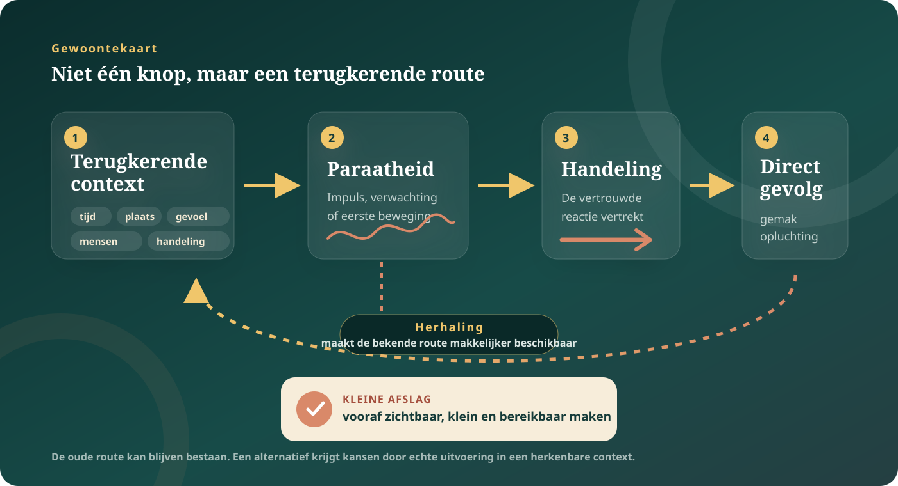

De kern in gewone taal
Een gewoonte is geen karakterfout. Het is een geleerde snelroute.
Wanneer je in een terugkerende context vaak dezelfde reactie uitvoert, kan die context de reactie steeds makkelijker oproepen. Het gedrag vraagt dan minder overleg. Dat is nuttig: zonder automatische routines zou tandenpoetsen, autorijden of koffiezetten telkens een klein project worden. Maar dezelfde efficiëntie kan een route laten doorgaan die niet meer bij je doelen past.
Plaats, tijd, mensen, gevoel of een voorafgaande handeling kunnen een vertrouwde reactie oproepen.
Je kunt merken wat je doet en toch ervaren dat de reactie al vertrokken was vóór je opnieuw koos.
Gewoontes zijn geleerd en contextgevoelig. Ze kunnen veranderen, maar niet volgens één universele klok.
“Maar ik wéét toch dat dit mij niet helpt?”
Inzicht en gewoonte spreken verschillende talen. Een bewuste bedoeling kijkt naar een gewenst gevolg: ik wil rustiger reageren, vroeger gaan slapen of mijn telefoon minder vaak openen. Een gewoonteroute reageert vooral op wat nu herkenbaar is: de bank, het uur, een melding, de eerste spanning na een gesprek.
Daarom kan de handeling al begonnen zijn wanneer je bedoeling weer in beeld komt. Dat maakt je niet willoos. Doelgericht en automatisch gedrag werken meestal naast elkaar. Welke route op een moment de overhand krijgt, hangt mee af van aandacht, gelegenheid, de aantrekkelijkheid van gevolgen en wat de omgeving oproept.
De bruikbaarste vraag is vaak niet “wat mankeert er aan mij?”, maar “welk startsein zag mijn systeem eerder dan ik?”
Van terugkerend moment naar automatische route.
Een gewoonte is meer dan de bekende slogan “prikkel, routine, beloning”. Onderzoekers gebruiken verschillende definities en meetmethoden. Als leeskaart helpt deze lus wel om te zien waar verandering mogelijk kan beginnen.

Startsein
Niet alleen een voorwerp, maar ook tijd, plaats, gezelschap, stemming of de handeling vlak ervoor.
Paraatheid
Een impuls, verwachting of lichamelijke beweging kan opkomen voordat je een uitgesproken besluit merkt.
Handeling
De vertrouwde reactie is beschikbaar en efficiënt. Dat betekent niet dat ze altijd snel, simpel of gevoelloos is.
Direct gevolg
Gemak, opluchting, plezier of afronding kan herhaling aantrekkelijk maken, ook wanneer de latere gevolgen botsen met je doelen.
Een alternatief krijgt meer kans wanneer je het koppelt aan hetzelfde herkenbare moment en vooraf makkelijk bereikbaar maakt. Niet: “ik zal sterker zijn”, wel: “als ik mijn laptop sluit, leg ik mijn telefoon eerst buiten bereik en sta ik twee minuten op”.
Wat weten we redelijk goed?
Gewoontes groeien door herhaling in terugkerende contexten
In de psychologie worden gewoontes vaak beschreven als context-actieassociaties. Een bedoeling kan het gedrag aanvankelijk starten; door herhaling wordt de context zelf een steeds krachtiger aanwijzing. Automatische en doelgerichte controle zijn geen twee afgesloten systemen, maar kunnen samenwerken of concurreren.
Lees Wood & Rünger →Er bestaat geen magisch aantal dagen
Een recente systematische review vond veel variatie tussen mensen en gedragingen. De onderliggende studies waren beperkt in aantal en gingen vooral over gezondheidsgewoontes. “21 dagen” en zelfs één gemiddelde zijn dus geen persoonlijke deadline.
Bekijk de systematische review →Stabiele context helpt opbouw — contextverandering kan een opening maken
Wanneer dezelfde actie onder vergelijkbare omstandigheden terugkomt, groeit automatische uitvoering doorgaans sterker. Omgekeerd kunnen verhuizing, een nieuwe werkplek of een bewuste wijziging van de omgeving oude startseinen onderbreken. Een contextwissel wist de oude route niet uit.
Bekijk Wood, Tam & Guerrero Witt →De basale ganglia doen mee, maar zijn niet het “gewoontecentrum”
Onderzoek wijst op samenwerking tussen delen van het striatum, cortex en andere netwerken bij doelgerichte en meer automatische actiecontrole. Veel precieze circuitkennis komt uit dieronderzoek en laboratoriumtaken; ze mag niet één-op-één worden vertaald naar jouw dagelijkse patroon.
Lees het circuitoverzicht →Dopamine is niet gewoon het plezierstofje.
Dopamine speelt op meerdere plaatsen in het brein uiteenlopende rollen. In invloedrijk beloningsonderzoek reageren sommige dopamine-neuronen op het verschil tussen wat verwacht werd en wat werkelijk gebeurt: een voorspellingsfout. Daardoor kunnen signalen die een uitkomst voorspellen leerwaarde krijgen.
Dat betekent niet dat één dopaminepiek je gewoonte “veroorzaakt”, dat plezier en dopamine hetzelfde zijn of dat je je brein moet “detoxen”. Gedrag wordt gevormd door meerdere leerprocessen, verwachtingen, behoeften, contexten en hersennetwerken.
Een melding kan aandacht en verwachting oproepen omdat ze soms iets interessants voorspelt. Het onvoorspelbare karakter kan leren ondersteunen. Maar vermoeidheid, sociale behoefte, ontwerpkeuzes en beschikbaarheid horen óók bij waarom je kijkt.
Breaking hypothese: misschien leert dopamine niet alleen wat loont, maar ook wat je gewoon dóét.
De klassieke dopaminetheorie gaat vooral over een beloningsvoorspellingsfout: het verschil tussen de beloning die je verwachtte en de beloning die kwam. Een nieuwe hypothese voegt daar een tweede leersignaal aan toe: een actievoorspellingsfout. Dat signaal zou niet vragen “was dit goed?”, maar “deed ik iets anders dan mijn systeem voorspelde?”
Wat als herhaling zichzelf kan trainen, zelfs zonder dat de uitkomst steeds waardevoller wordt?
Een ander dopaminesignaal
In een geluidstaak bij muizen volgde dopamine in de staart van het striatum hoe onverwacht een gekozen beweging was. Experimentele manipulatie beïnvloedde het leren van geluid-actieverbindingen.
“Doe dat opnieuw” zonder waardescore
Naast leren van beloning zou een waardevrij systeem kunnen bijhouden welke actie in een toestand vaak wordt uitgevoerd. Samen zouden beide systemen stabiel gedrag helpen vormen.
Van muizentaak naar mensenleven
We weten niet of dit signaal menselijke telefoonroutines, piekeren of andere dagelijkse patronen verklaart. Het is evenmin bewezen dat je het veilig of gericht kunt beïnvloeden.
Misschien wordt een handeling soms niet hardnekkig omdat ze telkens beter voelt, maar omdat het brein steeds nauwkeuriger voorspelt: in deze toestand ben ik iemand die dit doet. Dat is een onderzoeksrichting — nog geen menselijke waarheid.
Wat zou deze hypothese sterker maken?
Onafhankelijke replicaties; vooraf geregistreerde studies bij mensen; metingen buiten één kunstmatige keuzetaak; bewijs dat het signaal actie leert en niet alleen beweging volgt; en onderzoek dat dagelijkse gewoontes werkelijk verandert zonder schade.
Maak hier geen “dopaminehack” van.
De studie levert geen supplement, detox, behandeling of snelle techniek op. Ze rechtvaardigt ook niet de conclusie dat verslaving, dwang of psychisch lijden slechts een verkeerd afgesteld herhaalsignaal is.
Bewijsstatus: gepubliceerd primair onderzoek met causale experimenten bij muizen; de brede verklaring voor menselijke gewoontes blijft speculatief. Lees Stephenson-Jones en collega’s in Nature →
Niet ieder terugkerend gedrag is “gewoon een slechte gewoonte”.
Niet moraliseren
“Je mist discipline.”
Omgeving, geld, tijd, gezondheid, zorglast, slaap en veiligheid bepalen mee welke keuzes werkelijk beschikbaar en herhaalbaar zijn.
Niet simplificeren
“Stress zet iedereen op automatische piloot.”
Sommige experimenten vonden minder doelgericht gedrag na stress; een recente preregistreerde studie vond geen algemeen verschuivingseffect. Stress kan aandacht en draagkracht beïnvloeden, maar verklaart niet iedere terugval.
Bekijk de recente nuance →Niet verwarren
“Verslaving is alleen een sterke gewoonte.”
Verslaving omvat onder meer verlangen, negatieve gevolgen, motivatie, sociale context en verlies van controle. Over de precieze rol van gewoonte en compulsie bestaat inhoudelijk debat.
Niet universaliseren
“Eén truc werkt voor elk patroon.”
Een eenvoudige dagelijkse handeling verschilt van piekeren, zelfbeschadiging, eetproblematiek, middelengebruik of een dwangritueel. Dezelfde routekaart is daar geen behandeling.
Open debat · hardnekkigheid
Zijn gewoontes werkelijk bijna onuitwisbaar?
Gewoontes worden vaak voorgesteld als permanent en steeds sterker. Een recente selectieve review stelt dat daarvoor verrassend weinig algemeen bewijs is. Automatisch gedrag is vooral efficiënt en contextspecifiek; contextverandering, aandacht en onverwachte gevolgen kunnen doelgerichte controle terugbrengen.
James en Dewey over een leven dat zichzelf oefent.
William James
Gewoonte spaart aandacht — en maakt zo handelen mogelijk.
James zag gewoonte als een kracht die dagelijkse handelingen draaglijk en stabiel maakt. Zijn waarschuwing blijft actueel: wat vaak terugkomt, vormt niet alleen een losse daad maar ook de ruimte waarbinnen volgende daden makkelijk worden.
John Dewey
Een gewoonte woont niet alleen in jou, maar in de situatie.
Dewey beschreef gewoontes als transacties tussen mens en omgeving. Dat perspectief verschuift de vraag van persoonlijke schuld naar ontwerp: welke wereld maakt dit gedrag logisch, bereikbaar of moeilijk te vermijden?
Deze denkers leveren geen hedendaags bewijs over neurale circuits of interventies. Ze helpen wel onderzoeken waarom een “eigen” gewoonte tegelijk lichamelijk, sociaal en materieel kan zijn.
Onderzoek het startsein, niet je wilskracht.
Kies één kleine, alledaagse handeling waarbij mislukken geen schade veroorzaakt. Niet stoppen met medicatie, eten beperken, middelengebruik zelfstandig afbouwen of een dwanghandeling forceren.
- 1Kies één concreet gedrag.
Bijvoorbeeld: automatisch nieuws openen wanneer je op de bus wacht.
- 2Vang drie echte momenten.
Noteer tijd, plaats, mensen, gevoel en wat je vlak ervoor deed. Geen rapportcijfer.
- 3Zoek het directe gevolg.
Kreeg je afleiding, opluchting, plezier, afronding of sociaal contact? Beschrijf wat er gebeurde, niet wat er “zou moeten” gebeuren.
- 4Ontwerp één kleine afslag.
Maak een alternatief zichtbaar en makkelijk op precies hetzelfde moment. Houd het onder twee minuten.
- 5Vergelijk zonder vonnis.
Wanneer verscheen de oude route? Wanneer lukte de afslag? Welke context maakte verschil?
Stop als observeren de drang, schaamte of controle juist sterker maakt. Bij dwang, verslaving, zelfbeschadiging, eetproblematiek of gedrag met medisch risico is professionele begeleiding passender dan dit experiment.
Maak van één observatie een Veranderroute.
Een begeleide tocht langs neuroplasticiteit, automatische patronen, stress en zeven dagen klein experimenteren.
Wanneer verder kijken?
Hardnekkig is niet hetzelfde als onschuldig.
Zoek passende professionele hulp wanneer gedrag gevaarlijk wordt, veel tijd inneemt, ernstige angst oproept, je functioneren belemmert of doorgaat ondanks grote schade. Bij acute dreiging of gevaar neem je contact op met de lokale hulpdiensten. Dit dossier stelt geen diagnose en vervangt geen behandeling.
Bronnen en verdere verdieping
- Breed overzicht · 2016Wood & Rünger — Psychology of Habit
Over terugkerende contexten, automatische responsen, doelen, stress en interventies.
- Systematische review · 2024Singh e.a. — Time to Form a Habit
Grote variatie in gewoontevorming en belangrijke beperkingen van de huidige interventieliteratuur.
- Longitudinaal onderzoek · 2010Lally e.a. — How are habits formed?
Veel geciteerde studie met eenvoudige gezondheidsgewoontes; nuttig, maar geen universele kalender.
- Contextonderzoek · 2005Wood, Tam & Guerrero Witt — Changing circumstances, disrupting habits
Over hoe veranderingen in dagelijkse context bestaand gedrag kunnen onderbreken.
- Gedragsreview · 2023Bouton — Habit and persistence
Tegenstem bij het idee dat gewoontes per definitie permanent of uitzonderlijk volhardend zijn.
- Neurowetenschappelijk overzicht · 2019Lipton, Gonzales & Citri — Dorsal Striatal Circuits for Habits, Compulsions and Addictions
Over cortico-striatale circuits; grotendeels gebaseerd op dier- en laboratoriumonderzoek.
- Beloningsleren · 2016Schultz — Dopamine reward prediction error coding
Over dopamine, verwachtingen en voorspellingsfouten; geen bewijs voor een simpel plezierstofmodel.
- Onderzoeksgrens · dieronderzoek · 2025Stephenson-Jones e.a. — Dopaminergic action prediction errors serve as a value-free teaching signal
Causale muisexperimenten achter de actievoorspellingsfout-hypothese; nog niet aangetoond als verklaring voor menselijke dagelijkse gewoontes.
- Preregistreerde studie · 2025Stress does not shift action control
Recente nuance bij de algemene claim dat acute stress mensen automatisch richting gewoontecontrole duwt.
- Kritische verslavingsreview · 2020Hogarth — Addiction and goal-directed drug choice
Tegenstem bij het idee dat menselijke verslaving hoofdzakelijk door gewoontes wordt verklaard.
Lees ook het Atlas-kompas en ons bronnenbeleid.